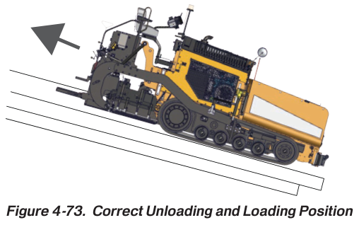

Study chapter · Outline I9
Transport paver
Moving a paver between sites requires a verified transport configuration and a coordinated loading plan. The fitted screed and attachments can change width, mass and securement requirements.
Learning step 1
Compliance with wide load regulations
Measure actual transport dimensions and confirm the load, route and applicable BC commercial transport requirements. Signs, lighting, permits, pilot cars and travel restrictions depend on the actual movement; they are not triggered by a single classroom rule. Removing extensions may change width but requires the approved handling and securement method. The carrier confirms the current requirements before departure.
Loading needs a shared plan

Learning step 2
Roles and responsibilities
Assign a competent machine operator, carrier/driver and ground guide as required. The driver/carrier manages transport compliance and securement within their responsibility; the designated operator follows the machine loading procedure. Do not assume the paver operator is always included or excluded. Everyone must know the stop signal, communication method and final release responsibility.
Learning step 3
Prepare machine for transport
Follow the OMM transport configuration for screed, extensions, augers, cut-offs, guards and loose equipment. Use approved lifting/rigging for removed components and designated tie-down points. The LeeBoy 8680 example gives specific preparation and loading instructions in printed pages 4-64–4-65; those instructions apply to the stated model/serial scope, not every paver. Read the complete procedure before a practical demonstration.
Learning step 4
Loading and unloading procedures
Check carrier/ramp capacity, alignment, support, traction and the clear movement envelope. Use the specified loading direction and controlled speed, with a guide positioned safely. Stop if alignment or communication is lost. After loading, position/support the machine, apply required parking controls and secure using rated components and the applicable National Safety Code Standard 10/BC requirements. Control the machine before releasing restraints for unloading. A time target never justifies rushing a critical step.
LeeBoy 8680 loading arrangement

Try it and explain your thinking
Name four checks before the machine touches the ramp.
Name four checks before the machine touches the ramp.
Skills you use: Reading, Problem solving.
A base machine is 8,600 kg and fitted items add 740 kg
A base machine is 8,600 kg and fitted items add 740 kg. Find the load before separate cargo.
Skills you use: Numeracy.
Write a handover when loading is delayed by an unidentified tie-down point.
Write a handover when loading is delayed by an unidentified tie-down point.
Skills you use: Writing, Communication, Collaboration, Adaptability.
Show the skill in supervised practice
Machine/model/serial or classroom case: __________ · Manual/procedure and revision: __________ · Date/location: __________ · Learner/observer: __________
Record each criterion as 0—not yet demonstrated, 1—with task-solving support, or 2—independently under the stated conditions. Mark unobserved criteria separately; do not convert missing opportunity into a zero. The assessor determines the required repeat practice and applicable qualification requirements. A critical failure means hold, correction and reassessment regardless of the numerical result. Use safe simulations for classroom reasoning; actual operation requires the selected equipment, approved conditions and competent supervision.
| What the observer checks | Result | Evidence |
|---|---|---|
| Critical: Safe access, surroundings and communication maintained. | Pass / hold | Observation: __________________ |
| Critical: Required energy, heat, movement and public-access controls maintained for the actual task. | Pass / hold | Observation: __________________ |
| Verify dimensions, transport rules and assigned roles. | 0 / 1 / 2 | Evidence/help: ________________ |
| Prepare screed/attachments to the actual OMM. | 0 / 1 / 2 | Evidence/help: ________________ |
| Demonstrate controlled loading preparation and rated securement checks. | 0 / 1 / 2 | Evidence/help: ________________ |
Actual conditions and support: __________________________
Feedback, next practice and authorized release/status: __________________________
Sources and further reading
- SkilledTradesBC. (2016). Asphalt Paving/Laydown Technician program outline, I9, printed p. 81; source PDF pp. 83–83.
- Canadian Council of Motor Transport Administrators. (June 2013). National Safety Code Standard 10: Cargo Securement. Open publication.
- Canadian Council of Motor Transport Administrators. (May 2016). Cargo Securement Standard: Interpretations and Guidance. Open publication.
- Province of British Columbia. (Web snapshot: October 30, 2026). Cargo Securement. Open publication.
- Caterpillar. (Various editions). Paving, compaction, milling and machine publications; identify the applicable document/model. Open publication.
- LeeBoy. (2026). 8680 Commercial Paver: Safety and operations manual (1033428-SOP). Serial 365152 and above. Components pp. 3-1–3-32; operation pp. 4-1–4-68; maintenance section 5. Open publication.
Figure-specific pages, editions and original contributors are credited beside each image. Current project requirements and the matching machine instructions determine practical use.